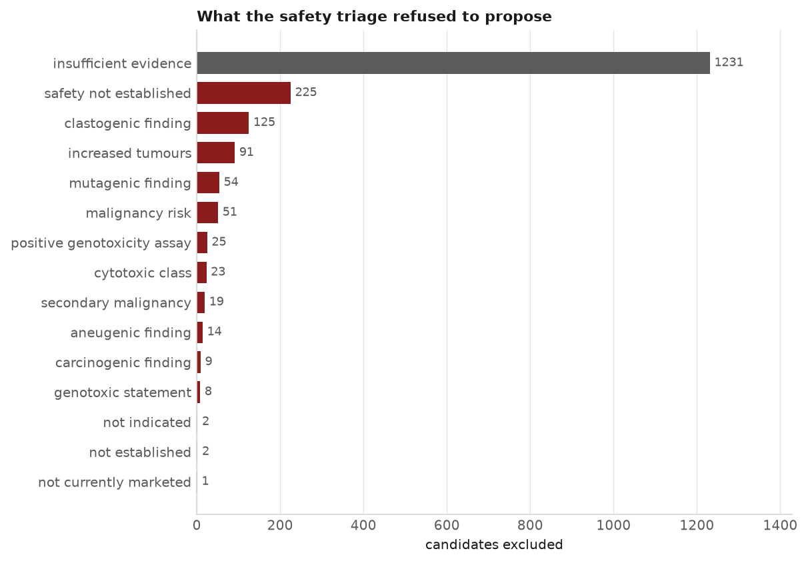
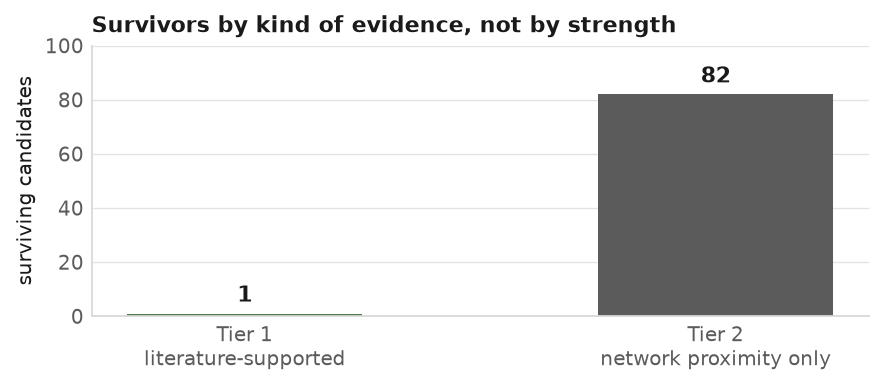
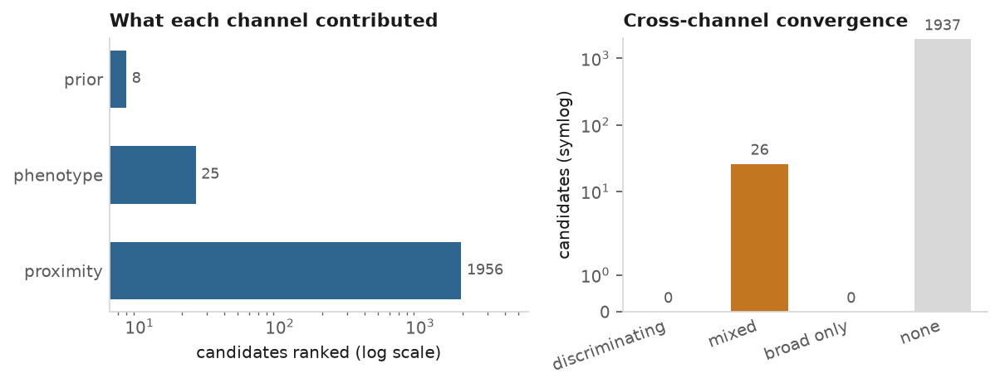
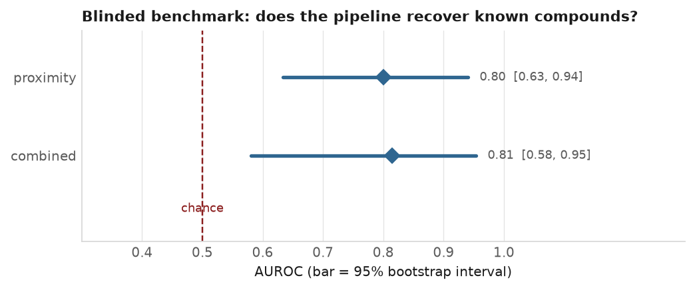

Track 2 candidate dossier. Computational hypothesis generation for mosaic variegated aneuploidy.
Hypothesis generation only. This is a computational shortlist produced by an automated pipeline for a research exercise. It is not medical advice, not a clinical recommendation, and not a claim that any drug listed here is safe or effective for any person. Nothing here has been tested in a laboratory or a clinic. No candidate should reach a patient except through a clinician and a trial.
The therapeutic endpoint is secondary prevention: reducing the risk of recurrence and of second primary cancers in someone already at elevated risk. It is not prevention of a first cancer, and it is not treatment of an existing one.
This pipeline takes one child's whole-genome sequence and a causal gene fixed by a person at a recorded gate, and asks which already-approved drugs are worth investigating. It ranks nothing it cannot source, and it refuses more than it proposes.
| Stage | Candidates |
|---|---|
| Nominated by the evidence channels | 1963 |
| Refused by the paediatric safety triage | 1880 |
| Surviving — literature-supported (Tier 1) | 1 |
| Surviving — network proximity only (Tier 2) | 82 |
This is the headline result. 1880 of 1963 candidates were excluded, each row naming the rule, the openFDA field, the SPL section and the sentence that did it. Read the full exclusions table →

The survivors are presented in two tiers by the kind of evidence behind them, never as one ranked list. A Tier 1 candidate rests on a verified, graded citation a reader can check. A Tier 2 candidate rests on a proximity score this pipeline computed, with nothing published linking the drug to this disease.

| Drug | Rank | Channels | Which channels | Grade | Confidence |
|---|---|---|---|---|---|
| TRAMETINIB | 119 | 2 | prior|proximity | in_vitro | 0.132 |
Every candidate below reaches this list on network proximity alone. There is no published evidence connecting any of them to this disease, and none was given a generated rationale — eighty-two paragraphs explaining that there is no evidence read like analysis and are not.
| Drug | Rank | Channels | Which channels | Grade | Confidence |
|---|---|---|---|---|---|
| TAPINAROF | 62 | 1 | proximity | ungraded | — |
| MIDOSTAURIN | 66 | 1 | proximity | ungraded | — |
| PERAMPANEL | 69 | 1 | proximity | ungraded | — |
| PRALSETINIB | 71 | 1 | proximity | ungraded | — |
| BELUMOSUDIL | 80 | 1 | proximity | ungraded | — |
| BELZUTIFAN | 122 | 1 | proximity | ungraded | — |
| AMIFAMPRIDINE | 124 | 1 | proximity | ungraded | — |
| REVUMENIB | 145 | 1 | proximity | ungraded | — |
| PHENTERMINE | 151 | 2 | phenotype|proximity | ungraded | — |
| DABRAFENIB | 158 | 1 | proximity | ungraded | — |
| HYDROCORTISONE ACETATE | 208 | 1 | proximity | ungraded | — |
| FLUTICASONE FUROATE | 209 | 1 | proximity | ungraded | — |
| BETAMETHASONE ACETATE | 216 | 1 | proximity | ungraded | — |
| CABOZANTINIB | 278 | 1 | proximity | ungraded | — |
| SIROLIMUS | 279 | 1 | proximity | ungraded | — |
| SETMELANOTIDE | 291 | 2 | phenotype|proximity | ungraded | — |
| AMPHETAMINE | 294 | 2 | phenotype|proximity | ungraded | — |
| TIRZEPATIDE | 295 | 2 | phenotype|proximity | ungraded | — |
| LEVOSALBUTAMOL | 300 | 1 | proximity | ungraded | — |
| VARENICLINE | 332 | 1 | proximity | ungraded | — |
| VALPROIC ACID | 349 | 1 | proximity | ungraded | — |
| CELECOXIB | 402 | 1 | proximity | ungraded | — |
| UMECLIDINIUM | 408 | 1 | proximity | ungraded | — |
| OLOPATADINE | 409 | 1 | proximity | ungraded | — |
| VILANTEROL | 418 | 1 | proximity | ungraded | — |
| FOSAPREPITANT | 420 | 1 | proximity | ungraded | — |
| FONDAPARINUX | 479 | 1 | proximity | ungraded | — |
| LISDEXAMFETAMINE | 489 | 1 | proximity | ungraded | — |
| ESOMEPRAZOLE | 520 | 1 | proximity | ungraded | — |
| TRIPTORELIN | 525 | 1 | proximity | ungraded | — |
| DALTEPARIN SODIUM | 546 | 1 | proximity | ungraded | — |
| INSULIN GLARGINE | 555 | 1 | proximity | ungraded | — |
| INTERFERON GAMMA-1B | 578 | 1 | proximity | ungraded | — |
| EPOETIN ALFA | 579 | 1 | proximity | ungraded | — |
| INSULIN GLULISINE | 603 | 1 | proximity | ungraded | — |
| RUFINAMIDE | 621 | 1 | proximity | ungraded | — |
| FESOTERODINE | 623 | 1 | proximity | ungraded | — |
| CERTOLIZUMAB PEGOL | 632 | 1 | proximity | ungraded | — |
| LEVETIRACETAM | 694 | 1 | proximity | ungraded | — |
| APREPITANT | 762 | 1 | proximity | ungraded | — |
| ATORVASTATIN | 769 | 1 | proximity | ungraded | — |
| IBRUTINIB | 916 | 1 | proximity | ungraded | — |
| SILDENAFIL | 935 | 1 | proximity | ungraded | — |
| ROFLUMILAST | 940 | 1 | proximity | ungraded | — |
| MIRABEGRON | 970 | 1 | proximity | ungraded | — |
| TASIMELTEON | 978 | 1 | proximity | ungraded | — |
| TEDUGLUTIDE | 995 | 1 | proximity | ungraded | — |
| PALOVAROTENE | 1003 | 1 | proximity | ungraded | — |
| SEMAGLUTIDE | 1080 | 1 | proximity | ungraded | — |
| TOPIRAMATE | 1132 | 1 | proximity | ungraded | — |
| TOFACITINIB | 1141 | 1 | proximity | ungraded | — |
| SELEXIPAG | 1162 | 1 | proximity | ungraded | — |
| NILOTINIB | 1181 | 1 | proximity | ungraded | — |
| BOSUTINIB | 1212 | 1 | proximity | ungraded | — |
| LONAFARNIB | 1221 | 1 | proximity | ungraded | — |
| LINACLOTIDE | 1270 | 1 | proximity | ungraded | — |
| TOVORAFENIB | 1274 | 1 | proximity | ungraded | — |
| LENIOLISIB | 1313 | 1 | proximity | ungraded | — |
| DEFIBROTIDE SODIUM | 1321 | 1 | proximity | ungraded | — |
| INCLISIRAN | 1389 | 1 | proximity | ungraded | — |
| INDAPAMIDE | 1399 | 1 | proximity | ungraded | — |
| ODEVIXIBAT | 1457 | 1 | proximity | ungraded | — |
| FITUSIRAN | 1469 | 1 | proximity | ungraded | — |
| LUMASIRAN | 1477 | 1 | proximity | ungraded | — |
| PEGCETACOPLAN | 1510 | 1 | proximity | ungraded | — |
| ONDANSETRON | 1584 | 1 | proximity | ungraded | — |
| ELTROMBOPAG | 1587 | 1 | proximity | ungraded | — |
| DABIGATRAN | 1623 | 1 | proximity | ungraded | — |
| BROMOCRIPTINE | 1632 | 1 | proximity | ungraded | — |
| APREMILAST | 1660 | 1 | proximity | ungraded | — |
| MAVORIXAFOR | 1667 | 1 | proximity | ungraded | — |
| BEROTRALSTAT | 1668 | 1 | proximity | ungraded | — |
| PROPOFOL | 1677 | 1 | proximity | ungraded | — |
| SPARSENTAN | 1701 | 1 | proximity | ungraded | — |
| DABIGATRAN ETEXILATE | 1702 | 1 | proximity | ungraded | — |
| PHENTOLAMINE | 1744 | 1 | proximity | ungraded | — |
| DEXTROAMPHETAMINE | 1762 | 1 | proximity | ungraded | — |
| ATOMOXETINE | 1777 | 1 | proximity | ungraded | — |
| LAMOTRIGINE | 1835 | 1 | proximity | ungraded | — |
| ANAGRELIDE | 1845 | 1 | proximity | ungraded | — |
| GABAPENTIN | 1934 | 1 | proximity | ungraded | — |
| OXYMORPHONE | 1946 | 1 | proximity | ungraded | — |

The architecture specifies five channels. Three produced evidence here — network proximity, phenotype and the literature prior. Channel A (knowledge-graph link prediction) is not built. Channel C (signature reversion) is implemented and calibrated, and it nominates nothing: on a knockdown-proxy signature its ranking is not distinguishable from an unrelated gene's knockdown at any candidate depth (p 0.15–0.44 against 40 control genes), so it declines rather than writing a table it cannot defend. Reproduce with python scripts/channel_c_diagnostics.py; the reasoning is decision D19. Status in this run: not_implemented.
The consequence is stated rather than buried: there is no discriminating cross-channel convergence in this shortlist, and the submission does not claim any.

MVA's phenotype is mosaic aneuploidy, and the dataset ships no alignments — raw reads and a called VCF only. The pipeline therefore estimates aneuploidy burden from per-chromosome B-allele frequency in the VCF itself, which is self-normalising and needs none of the GC-bias and mappability correction that read depth would.
| Field | Value |
|---|---|
| Statistic | mean |BAF - 0.5| at heterozygous biallelic SNVs |
| Window | 10000000 bp |
| Minimum depth per site | 10 |
| Baseline | sample's own autosomal windows, median + scaled MAD |
| Mosaic fraction estimator | noise-deconvolved: the folded-normal mean is inverted for the true BAF shift before conversion, because the raw statistic sits at the noise floor when the shift is zero and responds quadratically to small shifts |
| Smallest mosaic fraction resolvable | 0.09796409722145366 |
| Conservative bound | 0.24491024305363415 |
Per-chromosome aneuploidy results are withheld. MVA case series publish karyotypes and the worldwide population is around fifty patients, so which chromosomes are involved, how many, and at what mosaic fraction is close to an identifier. The method and what it can resolve are described; this child's result from it is not published.